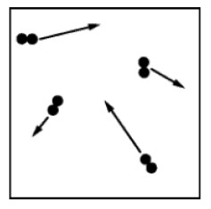

The gas particles in a vessel at \(20^\circ \pu{C}\) are represented in the diagram above. The lengths of the arrows represent the speeds of the particles. Which of the following diagrams best represents the particles when the vessel is heated to \(100^\circ \pu{C}\)?